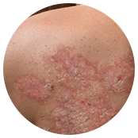
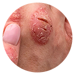
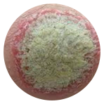
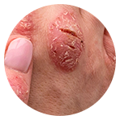
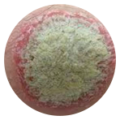
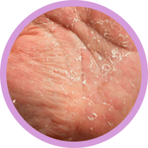
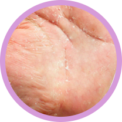
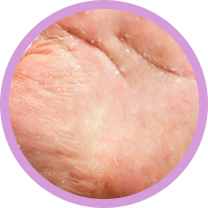

Dr. Derm
здоровая кожа без проблем-

Быстро убирает зуд и шелушение
-
Заживляет псориатические бляшки
-
Устраняет причины псориаза
-
Предотвращает распространение болезни

Только сегодня!
скидка -50%
при заказе
Что происходит с кожей при псориазе?
Верхний слой кожи называется эпидермис. Его основу составляют кератиноциты, которые в среднем живут 28 дней. При псориазе кератиноциты размножаются в несколько раз быстрее, не успевая созреть и состариться. Вместо 28 они живут всего 4-5 дней!
Воспаления провоцирует сбой в иммунной системе. Несозревшие кератиноциты не могут самостоятельно покинуть кожу. Они накапливаются на поверхности, образуя псориатические бляшки. Воспаление захватывает и дерму, поэтому в процесс вовлекаются потовые и сальные железы. Уменьшается их секреция, кожа лишается воды и жира, сохнет, трескается.

К обострениям
псориаза
приводят:
- стрессы;
- холодная и сухая погода;
- повреждения кожи;
- медикаменты;
- инфекции.

Ошибки при лечении псориаза:
-

Неправильный уход
При псориазе кожа становится сухой и грубой, а роговой слой эпидермиса значительно утолщается. Откажитесь от питательных, увлажняющих и кремов с отдушками. Используйте специализированные средства, которые делают кожу более пластичной. Частое мытье рук, как и любые банные процедуры, сведите до минимума, так как истончается защитный слой, что приводит к еще большему распространению бляшек.
-

Гормональная терапия
Гормональная терапия развивает привыкание и не устраняет причины заболевания. Она помогает добиться косметического эффекта, сгладив папулы и покраснения. Пользуясь гормональными средствами, эпидермис истончается и теряет защитный слой, что может привести к раку кожи.
-

Диета
Профилактика развития псориаза предусматривает исключение из рациона продуктов, в составе которых присутствуют холестерин, быстрые углеводы, искусственные красители и усилители вкуса. Неправильно подобранная диета способна вызвать сильное обострение. При соблюдении питания с индивидуальным набором продуктов вместе с терапией, можно добиться ремиссии.
Вы устали
скрывать свое тело?- Не по себе от взглядов окружающих?
- Псориаз долго не проходит?
- Диета не действует?
- Надоело платить врачам?
- Устали от
невыносимого зуда?
- Сложно подобрать одежду?
- Люди боятся, что это заразно и сторонятся?
- От увлажнения воздуха
нет толка? - Все больше замыкаетесь в себе?
- Кажется перепробовали
уже все от псориаза,
но ничего
не помогло?
Мы позаботились
о людях, склонных к проблемной коже.
Больше не нужно скрываться от мира!
-
Восстанавливает поврежденную ткань
-
Мгновенно облегчает зуд
-
Останавливает воспалительный процесс
Взаимодействие натуральных компонентов крема улучшает обменные процессы организма, за счет чего происходит восстановление. При этом зуд и шелушение проходят уже после первого применения.
После начала лечения кремом Dr. Derm останавливается процесс распространения болезни, и запускается регенерация поврежденной папулами ткани.
После курсового лечения кожа полностью обновится. Восстановится естественный процесс деления клеток с циклом 28 дней.
Dr.Derm универсальный натуральный крем, который помогает при всех видах псориаза:
 



- простой;
- пустулезный;
- каплевидный;
- экссудативный.
Почему Dr. Derm эффективен?
шалфей
Обладает антисептическим действием, снимает отечность, шелушение и участвует в рассасывании псориатических бляшек.
масло ши
Снижает сухость, способствует заживлению папул, восстанавливает естественную фактуру кожи.
золотой ус
Помогает поддерживать нормальный уровень рH, оказывает общеукрепляющее, противовоспалительное и успокаивающее воздействие на пораженные участки кожи. Обладает освежающим и расслабляющим эффектом, насыщает кожу необходимой влагой.
масло семян белой пихты
Имеет антибактериальное, антиоксидантное и регенерирующее действие. Повышает тонус кожных покровов, делает кожу упругой и эластичной.
сухой экстракт алоэ
Помогает поддерживать нормальный уровень рH, оказывает общеукрепляющее, противовоспалительное и успокаивающее воздействие на пораженные участки кожи. Обладает освежающим и расслабляющим эффектом, насыщает кожу необходимой влагой.
Всего 4 недели
и больше не придется скрываться от мира!-

НЕДЕЛЯ 1
Проходит воспаление, зуд, шелушение, останавливается разрастание бляшек.
-

НЕДЕЛЯ 2
Запускается процесс регенерации поврежденной ткани за счет нормализации цикла деления клеток.
-

НЕДЕЛЯ 3
Нормализуется рН организма, повышается тонус кожных покровов. Кожа становится упругой и эластичной.
-

НЕДЕЛЯ 4
При соблюдении диеты, предотвращается повторное обострение болезни.

Мнение специалиста:
При псориазе важно, чтобы терапия была максимально простой. Натуральные крема – это будущее в области лечения псориаза, которое, к счастью, доступно уже сейчас. Гормоны, иммуносупрессанты и фототерапия вызывают не только быстрое привыкание, но и атрофию кожи, которая в последствии может перерасти в рак.
Крем Dr.Derm отличается от привычной наружной терапии отсутствием компонентов содержащих стероиды и вызывающих привыкание. Натуральный состав справляется не только с заживлением бляшек (как низкой, так и высокой степени), но и предотвращает дальнейшее распространение псориаза.
При курсовом применении крема Dr.Derm дает возможность избежать рецидивов псориаза и жить полноценной жизнью.
Отзывы о креме Dr.Derm
Liza Hall, 40 лет
Из-за псориаза я стала настоящим отшельником. В периоды обострения даже не выходила на улицу. Перепробовала всё что можно: мази, кремы, обёртывания, солевые процедуры, ездила на восстановительные курорты. Они помогали, только недолго. Всё время думала, что сложные болезни лечат, а от псориаза почему не могут придумать лекарство? И, кажется, мои молитвы были услышаны. Когда в руки мне попал Dr.Derm, то я не возлагала на него надежд. А этот "очередной крем" помог мне! Через три недели пятна посветлели, сухость ушла, через месяц с небольшим – прошли полностью. Уже полгода у меня чистая кожа!
Simon Burke, 28 лет
Псориаз начался у меня в юности во время экзаменов, видимо, из-за сильного стресса. Начался с шелушения, а уже через два месяца я ходил только с длинными рукавами, так как моими руками можно было напугать даже самого закаленного хоррор-любителя. Это были не болячки, а уже какие-то шматки мяса. Врачи сказали псориаз. Назначали гормональные мази, крема, таблетки и даже уколы. Только все без толку. Унять зуд помогала только ледяная вода. Заживало всё долго, а потом тут же начиналось снова. Спас меня крем Dr.Derm и диета. Скоро будет четыре месяца, как я забыл об этом, и не передать словами, как я счастлив.
Остерегайтесь
подделок!
В связи с огромной популярностью крема Dr.Derm, участились случаи фальсификации. Оригинальный крем от псориаза Dr.Derm можно приобрести только на этом сайте.

Dr. Derm
здоровая кожа без проблем-
Быстро убирает зуд и шелушение
-
Заживляет псориатические бляшки
-
Устраняет причины псориаза
-
Предотвращает распространение болезни
Anna Brut, 31 год
Самое ужасное в псориазе – то, что он морально подавляет. Бляшки шелушатся, чешутся, разрастаются, так на тебя еще все смотрят с брезгливостью. Я устала от реакции людей. Про одежду я вообще молчу, только натуральные ткани и свободный стиль. Самый ужас был, когда псориаз начался на голове. Невозможно жить с этим. Меня ждала бы депрессия, если бы не попробовала Dr.Derm. То, что он сотворил с моей кожей – чудо. Это единственное средство, которое помогло мне надолго. Я наконец-то стала чувствовать себя полноценным человеком. Спасибо вам!